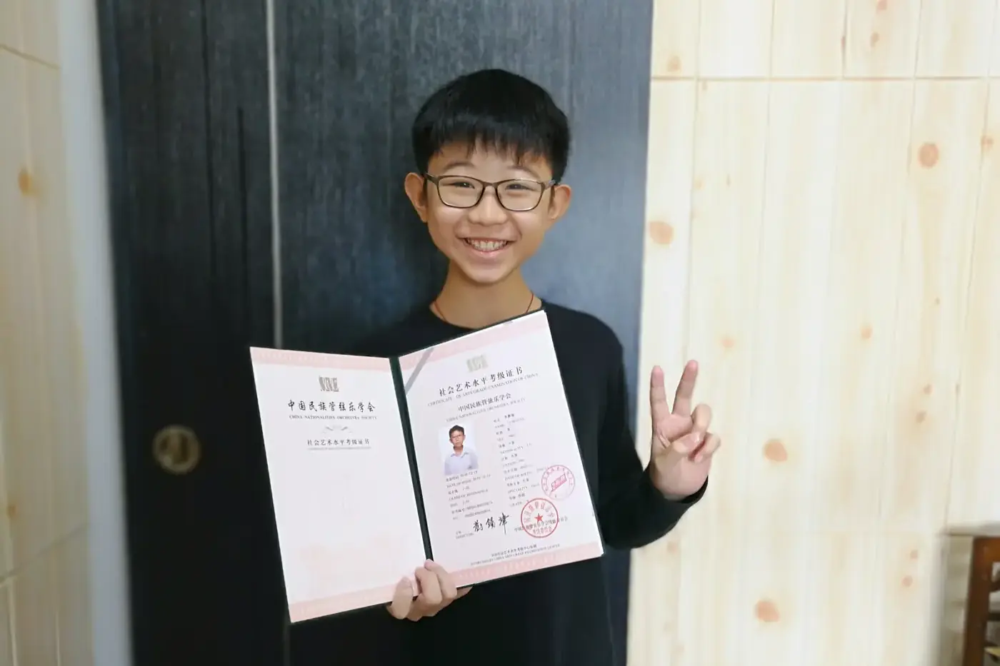
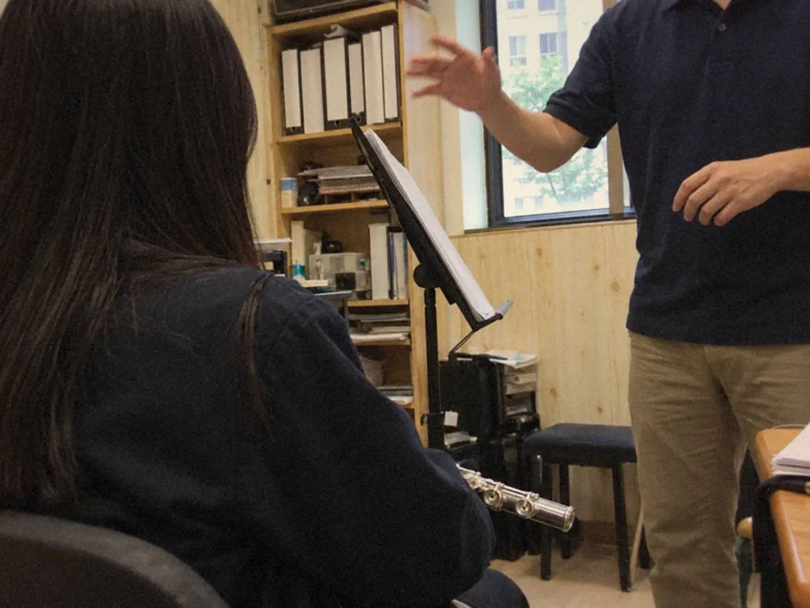
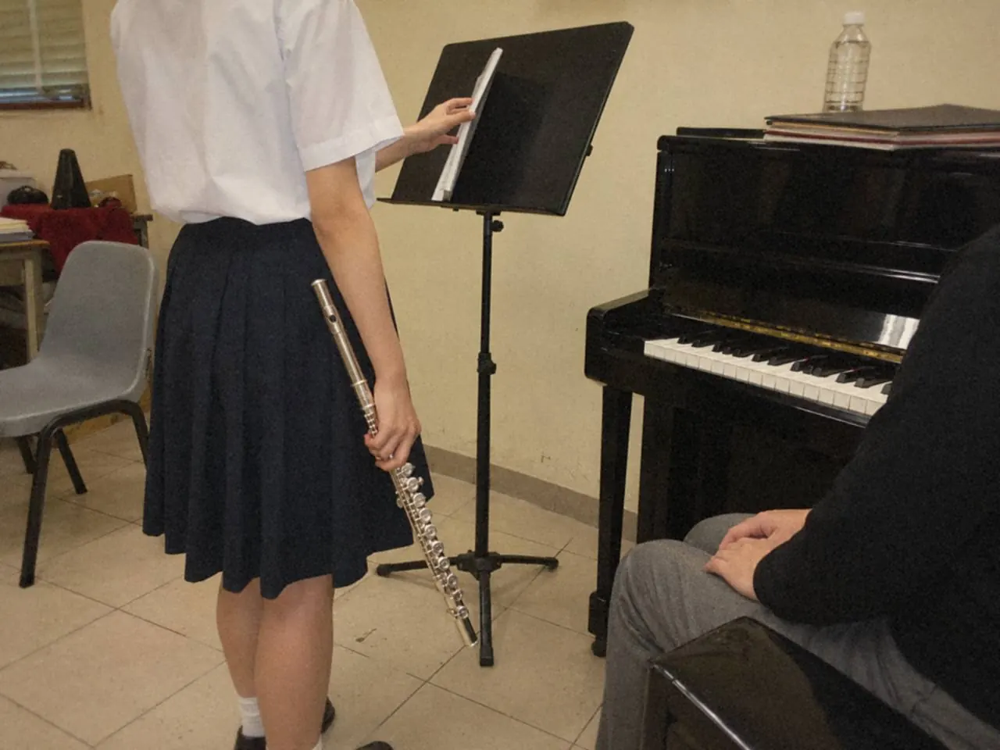

考級曲要吹得像音樂，先由譜面的速度、力度、奏法和分句定方向，技術段落慢練分組後放回句子，再把曲與曲之間的停頓也排練一次。三件事分開練，再連成一套。

只把音符吹準，未必呈現得到作品的風格。三四首曲各自熟悉，連起來卻又累又慌，往往是另一件事：曲目之間從來沒有練過。
怎樣吹得不像練習曲？
先從譜上看得見的資訊開始：速度、力度、奏法、分句和結構。作品的時代風格也要一併考慮。不必用很多形容詞，清楚的聲音勝過「要有感情」。
選一句旋律，標出主要重音、方向和收束。先唱出來，再用樂器實現。

聽版本可以開闊選擇，但要分清哪些是版本之間的差異，哪些是作品本身的要求。選兩個可靠的演奏，每次只比較一個問題，例如句尾怎樣處理，不必一次吸收所有細節。
回到譜面，看自己的選擇是否配合前後結構。試奏不同處理，再說出改變帶來的效果。當力度、速度和奏法都連得上具體樂句，機械的重複就會慢慢退去。
技術段落為甚麼越練越緊？
只用速度硬推，通常會這樣。先定位最早失控的兩拍，把節奏、指法和起音分開處理，再向前後接回。
- 把最難的音群拆成兩三音，慢速連奏，再加回原來的起音和節奏。
- 用節奏變形觀察不同接縫。它只是暫時工具，練完要立即回原譜比較，別把不需要的重音留下來。
- 加速前，確認動作自然、聲音清楚。
- 快起來又夾音，先看進入難點的上一拍，不要只盯着出錯那一音。
之後用接近正式的速度，演奏一段較短而完整的樂句，保留方向。技巧讓動作清楚，音樂仍要知道每個音為何走向下一個音。
長笛學生可再讀長笛手指：清晰與換指，慢練的做法另見慢練、分段與節拍器。
曲與曲之間，要練甚麼？
放譜、調整姿勢、重新感覺速度、安排呼吸，全都要時間。完整演奏的節奏，也包括每一段之間的安靜。
曲目次序若受考試或演出要求規定，先按規則。有選擇空間時，才與老師討論對比、體力和整體走向。別只把最熟的一首放在前面，便不理其餘的關係。
上一首很快，下一首很慢，心裏的拍子未必會自動切換。停一停，默想新曲的代表樂句才開始。每首曲有清楚的入口，比急着填滿空白更穩。
要換譜或調整伴奏，事前約定動作和次序，當作排練的一部分。這些不必留到正式那天才臨場處理。

把整套錄下來。留意後半段是否明顯失去集中，某首曲之後是否總要很久才能重新開始。這些資訊可用來調整日常練習和曲間安排，光是增加單曲次數解決不了。
結尾也要保留完整的收音，讓全套的餘音離開。整套演奏像一冊小書，篇與篇之間需要留白，翻頁的時間也要一併練好。
常見問題
考級曲可以參考多少個演奏版本？
沒有定數，文中的做法是選兩個可靠版本，每次比較一個問題。比較後要回到譜面，看選擇是否配合結構。
節奏變形練法適合所有技術段落嗎？
它只用來觀察不同接縫。先看最早失控的兩拍，練完要回原譜比較，確認沒有留下多餘重音。
考級時曲目可以自己排次序嗎？
要先看所選考試的規定，以考試機構現行公布為準。有選擇空間時，再按對比和體力與老師討論。
這星期挑一個最難的段落，圈出最早失控的兩拍，用節拍器慢速練；週末錄一次整套，連曲間停頓一起聽。